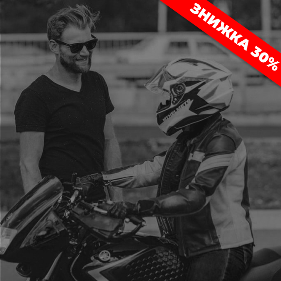
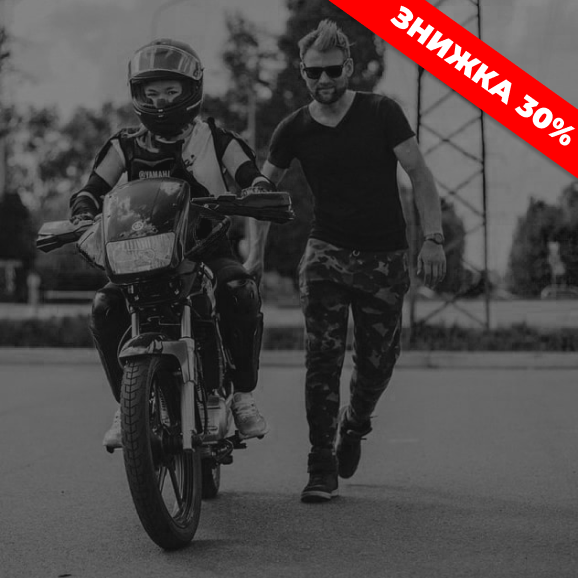

Інструктори Quick Shift - це діючі пілоти та переможці на чемпіонатах України Cossacks Pitbike Cup та UASBK, а також у київських змаганнях з мотоджимхани. Ми на практиці довели наш професіоналізм кількістю учнів-призерів та чемпіонів у змаганнях з різних спортивних дисциплін. Майже всі прийшли до нас новачками, а згодом деякі з них відкрили свої мотошколи. Змогли вони – зможеш і ти!
Базова школа
курс
"базовий"

Розроблений спеціально для новачків. Система курсу побудована так, що учень від простого до складного формує базу навичок, і набуті знання закріплює з уроку в урок на практиці, вчиться довіряти техніці та взаємодіяти з нею як єдиний механізм. Наша головна мета – впевнені навички та безпека учня на дорозі, тому що майданчик сервісного центру та щільний міський трафік – це абсолютно різні умови. Ми гарантуємо, що після закінчення нашого навчання ти не просто складеш будь-який іспит, але й будеш підготовлений до різних дорожніх ситуацій.
8 000 грн / 10 занятьпробне
заняття

Практичне знайомство з мотоциклом, повністю ідентичне першому уроку з базового курсу. В кінці заняття ми пригостимо тебе чашкою кави, а ти зможеш задати нам всі питання, які тебе цікавлять.
600 грн / 1 заняття Хочу вчитисьіндивідуальне
заняття

Заняття триває 1 годину та підходить тим, кому потрібно підтягнути певну навичку або є питання, які незручно ставити знайомим, але які вимагають відповіді професіонала.
800 грн / 1 заняття Хочу вчитисьКурс
«згадати все»

Якщо у вас довго не було практики мотоводіння (наприклад, у зимовий час), то моторика рук і ніг, швидше за все, вже не та. Відпрацювання навичок не займає багато часу, але дозволяє відчути мотоцикл, а також оцінити його реакцію. Цей курс підходить усім, кому потрібно в стислий термін відновити навички керування мотоциклом.
4 000 грн / 4 заняття Хочу вчитисьКурс для
дітей

Те, чого малеча дізнається в ранньому віці, супроводжує її протягом усього життя. Навички, набуті в дитинстві, служать міцною основою і не можуть порівнюватися за якістю з навичками, які ми отримуємо, навчаючись чомусь у дорослому віці. Щоб знайомство вашої дитини з мотоциклом (а рано чи пізно це станеться) не відбулося спонтанно та не мало трагічних наслідків, ми розробили курс спеціально для самих маленьких. Ви маєте можливість зробити вагомий внесок у розвиток дитини, навчити її досягати поставлених цілей і прагнути до перемог. А ще це дуже весело!
1 200 грн / 1 заняття Хочу вчитисьСпортивна школа
мотоспорт
На цьому курсі ми поставимо тобі необхідні навички їзди на кубатурному мотоциклі, щоб ти міг реалізувати весь його потенціал на треку та, за бажання, брати участь у чемпіонатах з мотоспорту. Заняття проходять на треку «Чайка» з професійним пілотом школи на спортбайку Kawasaki 300. У вартість включено оренду треку, бензин та екіпірування.
2 000 грн / 1 заняття Хочу вчитисьПітбайк

Пітбайки для мотоспортсменів - це аналог картингу, адже завдяки вазі всього 70 кг вони дозволяють пілоту швидко розвиватися і рухати рамки своїх умінь. Вони не такі дорогі як дорослий мотоциклетний спорт, тому на них займаються сотні людей на картодромах. І ми запевняємо тебе, це не менш цікаво, ніж дорослий мотоспорт. На курсі ти навчишся відчувати мотоцикл, зрозумієш, як він реагує в різних ситуаціях, прокачаєш навички управління і, якщо захочеш, підготуєшся до чемпіонату України Cossacs Cup
1 500 грн / 1 заняття Хочу вчитисьДжимхана

Мотоджимхана – це японське мистецтво каліграфії на мотоциклі. На курсі ти натренируєшся швидкому маневруванню, освоїш розвороти в повний виворот, розгони і гальмування в нахилі, безліч класичних та сучасних японських схем, а також підготуєшся до змагань Moto Gymkhana Kiev Cup
1 000 грн / 1 заняття Хочу вчитисьПодарунковий Сертифікат
Яскраві емоції – найкращий подарунок! Урок водіння на мотоциклі для найближчих, які шукають нових вражень
* можно придбати на будь-який вид та кількість тренувань
ЗамовитиВідповідаємо на запитання
Чи можу я навчатися, якщо я зовсім новачок?
Так, безумовно. Це можно зробити завдяки курсу «Базовий», який розроблений спеціально для новачків. Доречі, ми маємо критий майданчик, тому навчання проводимо весь рік, навіть взимку
А якщо я хочу спробувати, щоб зрозуміти, чи сподобається мені чи ні?
Ми подбали про це питання та зробили пробний урок, який за змістом та кількістю практики ідентичний першому уроку базового курсу. Приходьте до нас у гості, знайомтесь з інструктором особисто та не соромтеся запитувати. Все підкажемо, на все відповімо. У нас дійсно працюють професіонали.
Чому так дорого?
Ви сплачуєте нам гроші за якісну базу навичок від яких залежатиме ваше життя – вони не коштують дешево. Практичний стаж наших інструкторів від 4 до 13 років, ми їздимо на мотоциклі щодня протягом усього сезону, стикаємось з десятками небезпечних випадків на дорозі та відпрацьовуємо їх з учнями. Ми ставимо у пріоритет не складання іспиту в МРЕО, а сильний бекграунд знань після проходження курсу, бо міський трафік відрізняється від спокійного та зрозумілого майданчика сервісного центру. Ви довіряєте нам, а ми відпрацьовуємо кожен сплачений вами цент на совість, бо це ваша безпека та репутація нашої школи. Заходьте до нас в Інстаграм та дивіться хайлайти навчального процесу, відгуки, перемоги наших учнів та інструкторів на чемпіонатах України. Ми дійсно пишаємось мотошколою Quick shift
Я отримаю права після навчання?
Ми допомагаємо з отриманням прав, а також надаємо на іспит свою техніку та супроводжуємо вас на етапі складання іспиту. Передзвоніть нам і дізнайтесь більш детальну інформацію з цього питання.
Чи можна розбити плату за навчання?
Так. Ви можете внести першу частину перед стартом навчання, а другу після проходження першої половини курсу
В які дні проходять заняття?
Ми робимо графік навчання за вашим бажанням, а також корегуємо за потреби. Ви можете займатися вранці, в обід або ввечері після роботи
Мені вистачить 10 занять, щоб навчитися водити мотоцикл?
Так. Але навіть якщо ви захочете взяти додаткові заняття, для учнів на базовому курсі вони коштуватимуть за ціною 1 заняття з курсу, ви не переплачуєте вище за цю суму
Чому немає курсу для дівчат?
Взагалі немає значення якої статі учень, знання з керування мотоциклом даються всім одинакові, тому «курс для дівчат» – це просто маркетинг інших шкіл
Контакти
Ми знаходимося у м. Київ та працюємо весь рік
Літо - осінь:
- просп. Степана Бандеры, 23 Це на парковці ТЦ «Fozzy», район метро район метро «Почайна» (колишня Петрівка);
- вул. Авіаконструктора Антонова, 2 (картинг-центр Чайки)
Зима - весна:
- вул. Полковника Шутова, 22;
- просп. Степана Бандеры, 34В (картинг-центр Блокбастер)